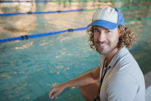

Meet our Coaches
Our mission at TSS is to help you reach your athletic goals through motivation, support, and education.
We have years of experience with athletes of all ages and abilities and we're happy to assist any
athlete committed to pursuing his or her dreams.
We offer one-on-one coaching, evaluation, and instruction; but we also offer small group practices. Our
classes are never large in number. We believe that a low coach-to-athlete ratio provides the best
results in the shortest time.
Come in and introduce yourself to our team of coaches and educators.
Alison Palmer
- MA, CSCS, USAT Level II Coach
- Exercise Physiologist and Biomechanic Specialist
- Owner of
Tri and Succeed Sports

Alison brings an extensive background in physiology and biomechanics to TSS and 18 years of experience
coaching in the health and fitness field. She is a USA Triathlon Level II Certified coach and
is certified in strength, conditioning, and bike fitting. Before founding
Tri and Succeed Sports, Alison built a private training studio for local athletes.
Alison was a lettered volleyball player at the University of Texas and she picked up the sport of
triathlon after graduation. Triathlons have been her passion ever since. She has competed in
many short- to long-distance running, cycling, and triathlon events including multiple races
in IM Texas, IM Brazil, and IM Chicago.
Alison wants to provide personalized instruction to her athletes. She believes an educated athlete
is an athlete primed for success. Under her instruction, you will learn not only what to do but
why to do it.
Kevin Hughes
- BS, USAT Level I
- Kinesiologist

Kevin is a student of body mechanics. In addition to a Bachelor's degree in Kinesiology, Kevin brings
certification in Swim Instruction and coaching. He has coached numerous recreational and elite
athletes, including Sprint and Ironman triathletes.
In addition to coaching individual athletes, Kevin has coached a variety of teams and groups. Kevin
coached Swimming and Cross Country at Austin High School and Palmer Country Day School. As Head
Coach, his swim teams set school records in 9 out of 11 events, won the Mid-Texas Conference
Championship, and consistently finished in the top 3 at the Small School State meet. Kevin currently
coaches the Masters swim classes at TSS.
Since being talked into his first triathlon at 16, Kevin has always enjoyed the challenge the sport
provides. His motivation comes from the desire to improve himself, not the desire to beat others.
Starting as a middle of the pack athlete, his initial goal was to work his way through the distances
which culminated with an Ironman finish in 2010. Bill remains a student of the sport while helping
others achieve their fitness and racing goals.
Tammy Whitmore
- USAT Level I
- Certified Triathlon Trainer
- Certified Nutritionist

Fitness has always been a part of Tammy's life. Whether it was running, cycling, or strength conditioning
she has dedicated herself to fitness and a healthy lifestyle. Trained as a mechanical designer,
Tammy has designed commercial strength products used in health clubs around the country. Her
interests led her to TSS, first as one of our athletes and then, 4 years ago, as a member of
the staff.
After completing her USAT certification training, Tammy designed the course of workouts we use with
our runners and cyclists. Tammy is also our nutritionist; she believes that reaching one's fitness
goals requires a holistic approach in which what goes into the body is as important as what comes
out.
Coming from an engineering background, Tammy looks at things from an analytical point of view. Recently
Tammy completed two seminars on cycling with power meters. Tammy believes in continuing education
and has set her sights on receiving her USAT Level II certification and USAT youth coaching certification.